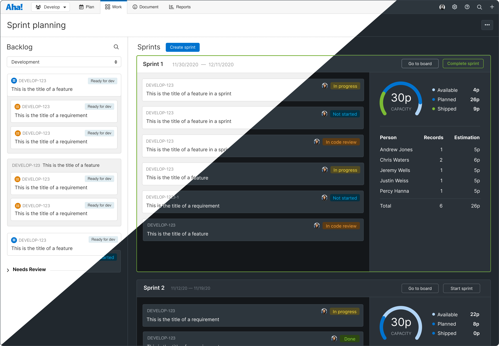

Background
In 2021, Aha! expanded its product offering to introduce a new, fully extendable, agile development tool. This product, targeted at software development teams, would integrate deeply with the company's flagship strategic planning and roadmapping software.
Our research into the market and target personas indicated that dark mode was an important feature for engineers, so we made it a priority for Aha! Develop.

The sprint planning page is one of Aha! Develop's key features.
The Challenge
While there were some universal styles in place, a lot of one-off instances of color styling had accrued over the years. This made the project specifically challenging because there was a significant amount of clean up that needed to be done in order to introduce a new theme.
Another challenging aspect was that Aha! had an existing user-base that had had the ability to customize colors of UI elements for years. These custom colors would then be used in various ways, from the color of a status pill, tag, or the background of a record card. We needed to ensure that we weren't breaking user-created custom colors, while transitioning our default set of colors to a set that worked in dark mode.
Our Goals
The primary goal was to introduce dark mode for Aha! Develop because our research indicated that this was considered a must-have feature for many software engineers, the target persona for the product. However, years of technical debt required a clean up of the code to support theming. That became an additional goal for the project.
My Role
I was one of the lead designers on the Aha! Develop launch and my unabashed love for dark mode made meant this was a project was one I had to take. I partnered closely with the engineer on the project to define a new color palette and create dark mode versions of common screens to validate.
The Process
Once we had a vision in place and clear goals, work began. My first step was to collect competitive research and inspiration. I spent many hours creating accounts in project management software and analyzing (and capturing) how each tool handle record details.
Early Iteration
This project required many low-fidelity wireframes. One major reason for this was that we were exploring some major structural changes to the record detail interface. One of these major decisions was whether to keep the "everyone on one screen" approach that the detail pages had always used or to use a more modular tabbed approach, breaking record details into logical groupings. We knew that introducing tabs would be met with a lot of hesitancy, but we felt that it was necessary to improve performance and reduce cognitive load. Once we decided that tabs were the way forward, things really kicked into gear.

A wireframe comparison between tabbed and collapsable sections

A wireframe of the full-screen "details view" in the new layout
High Fidelity
Once we knew the general layout, it was time to work out the details of the UI. This was particularly challenging because we knew we wanted to improve the look and feel of the record details pages to give it a more modern feel and make it simpler, but we also needed to work within the confines of the existing design language since record details can be viewed anywhere in the application.

High fidelity mockup of the new "drawer" design

High fidelity mockup of the new full-screen "details view" design
To make things even more challenging, while this redesign was happening, there was an application-wide font change going on. Our icon library was also being updated. This led to many, many versions of the same design as we validated how the new font and icons would fit with the redesigned record detail views.
Additional Records
Once we had a basic framework in place, it was time to apply it to the many different records in the product. Each record had distinct data that needed to be manually designed. Thankfully, our ultra-modular design was able to handle the many needs of all of the records.
Early Access
Due to the major impact that this change would have to all customers, we introduced an Early Access Program for the very first time. The program consisted of turning on the new experience for a small group of customers and aggressively gathering feedback and iterating on the design based on that feedback.
We also, for the first time, made the transition opt-in for a period of time. This gave users time to explore the new record details experience before fully committing.

Users had the option to opt-in (and back out, if desired) to the new experience for a period of time
The Result
As expected, we heard from many customers who felt that it was harder to find information they needed. We even felt the pressure internally (we use Aha! to manage our work at Aha!). However, we felt confident that we had achieved our goals. We made (and continue to make) changes based on feedback, but we are proud of the result.
Now, over a year later, we get a lot of positive feedback on the redesigned record details views. Internally, when we manage to stumble across a screenshot of the old design, it is clear that we made great strides in the user experience for the product.